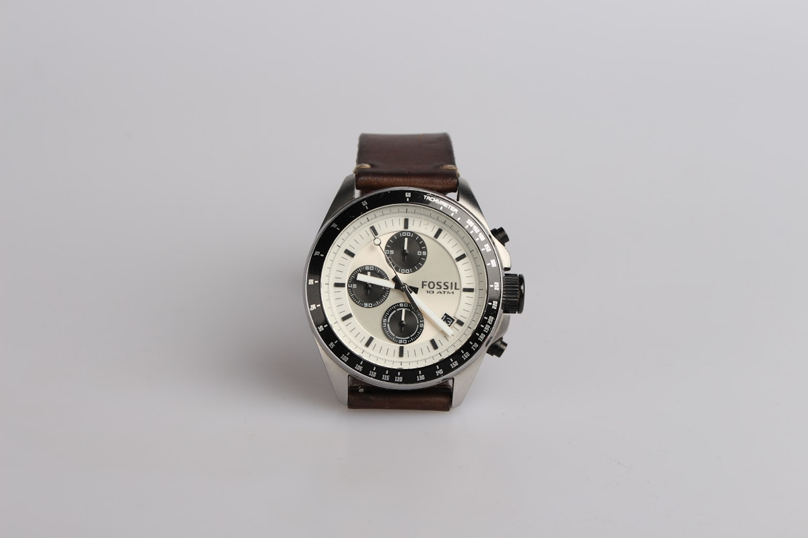
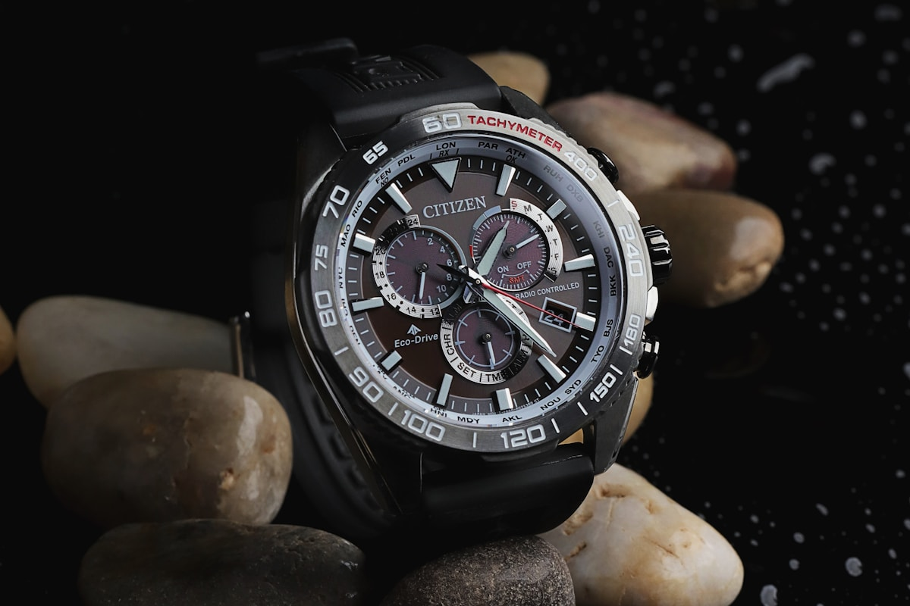
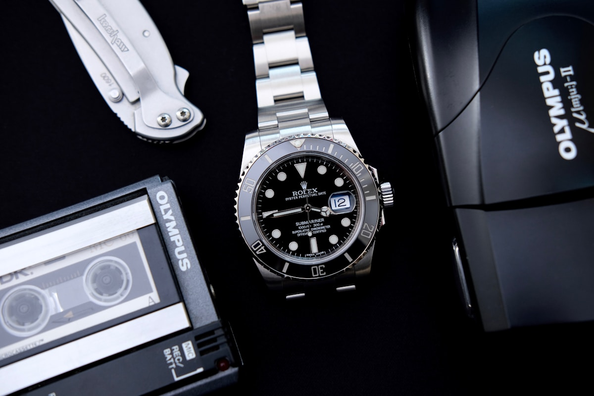
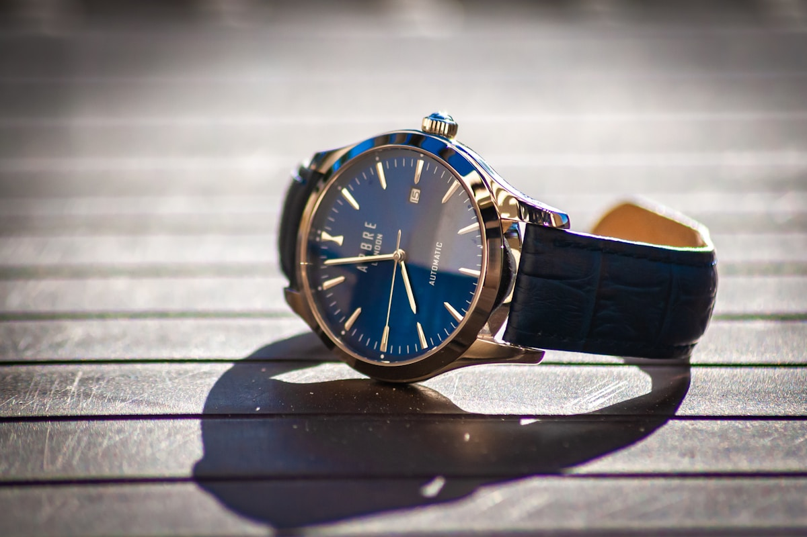

Escapement PhysicsFebruary 15, 2026 • 16 min read
Co-Axial Escapements vs. Swiss Lever: Friction Physics & Isochronism
A mechanical breakdown of radial impulse delivery, sliding friction elimination, and the reduction of lubricant degradation in modern horology.
Read Monograph
Metallurgical ScienceFebruary 22, 2026 • 15 min read
The Metallurgy of Watch Cases: 904L Superalloys, Grade 5 Titanium & Ceramic
Investigating pitting resistance equivalent numbers (PREN), galvanic corrosion resistance, Vickers hardness metrics, and laser sintering.
Read MonographMarch 1, 2026 • 17 min read
Grand Complications: Tourbillons, Perpetual Calendars & Cathedral Repeaters
Deconstructing gravitational compensation cages, 1461-day programmatic mechanical cams, and acoustic resonance in acoustic gongs.
Read MonographMarch 3, 2026 • 16 min read
Chronometer Certification Standards: COSC vs. METAS Master Chronometer
Analyzing 15-day multi-temperature thermal chamber protocols, 15,000 Gauss anti-magnetic certification, and the Geneva Seal requirements.
Read Monograph
Curatorial ConservationMarch 5, 2026 • 17 min read
Vintage Mechanical Watch Preservation: Demagnetization & Lubrication Protocols
Synthetic Moebius oil viscosity maps, ultrasonic jewel bath cleaning, amplitude measurement, and balance spring demagnetization.
Read Monograph
Horological EconomicsMarch 6, 2026 • 16 min read
The Horological Economics of Mechanical Scarcity & Haute Auctions
Evaluating independent watchmaker micro-production, hand-finishing labor hour metrics, secondary auction indices, and heirloom value retention.
Read Monograph